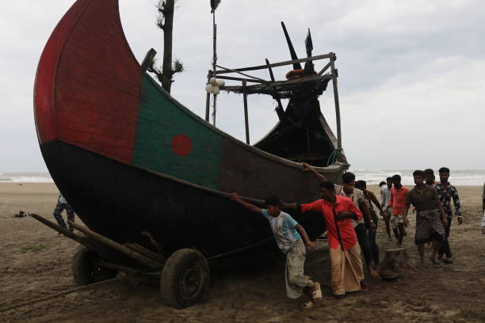

About Fishermen
Fishermen are experts in navigating the seas and rivers. Their lives are intricately tied to marine ecosystems, helping sustain communities around the globe. From the small fishing villages of the world to large commercial fleets, fishermen play a critical role in feeding nations and supporting economies.
Today, with the growing threat of overfishing, many fishermen are at the forefront of adopting sustainable methods. They are using eco-friendly gear, reducing bycatch, and participating in programs aimed at protecting the ocean’s future. Fishermen's traditions are now evolving, blending ancient knowledge with modern science to ensure that fish stocks are preserved for future generations.
Explore more about fisheries on the FAO Fisheries website.
The Fisherman Community in Bangladesh
Bangladeshi fishermen, or মাছ-শিকারি (mach-shikari), often come from families where fishing has been passed down through generations. These fishermen rely on knowledge and techniques honed over decades, navigating rivers and coastal waters with an innate understanding of the fish, tides, and seasons. Fishing communities are close-knit and depend on one another, living in small villages where they work together to catch and distribute fish. Traditional fishing boats, such as wooden boats powered by sails or oars, are still commonly used, though some have adapted to newer technologies.
Challenges Facing Fishermen
Despite its importance, the life of a fisherman is not easy. With seasonal flooding, rising sea levels, and unpredictable storms, the job is full of risks. Financial instability is another challenge, as fishermen often live in poverty and lack access to adequate health care and education. The government and various NGOs are working to provide support, but many fishermen still rely on traditional systems to sustain themselves and their families. This site aims to shed light on the lives of these resilient individuals, their struggles, and their contributions to society.